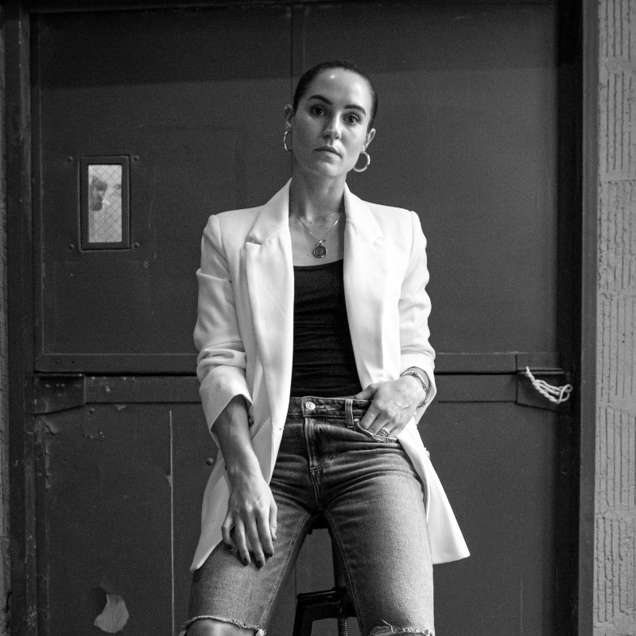
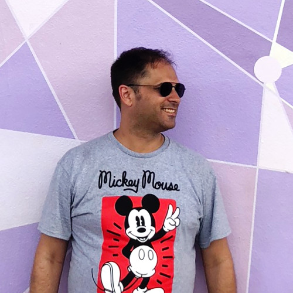
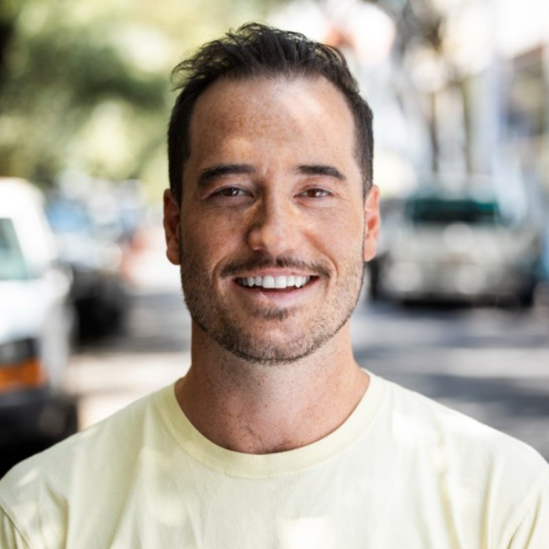

Confidential proposal. Access restricted to authorized recipients.
Confidential proposal. Access restricted to authorized recipients.
A content and interactive experience system for IonQ's Washington DC Executive Business Center.
The scenario. IonQ's DC EBC will host Members of Congress, enterprise buyers, and quantum PhDs in the same room. The content has to land for all of them.
Who we are. Futureman is a creative and production studio built for spaces like this: CGI, 3D, motion, interactive systems, and AV integration under one roof. Partnered with SketchDeck (via 24 Seven Agencies) for this engagement.
What we're proposing. Four tiers, $275k to $1.5m. Evergreen spine, swappable skin. Built to last, built to update.
On-screen and interactive content for the DC EBC. The storytelling layer that sits on top of whatever physical infrastructure IonQ's facilities vendors build.
Interior design, architecture, or AV hardware procurement. Futureman designs and produces the content. We consult on the hardware. We don't buy it.
Every visitor, Congress to PhD, leaves understanding what IonQ does, why it matters, and why IonQ specifically. Not impressed. Convinced.
The concepts, frameworks, and approaches presented here are directional. They exist to demonstrate how we think about IonQ's story, not to replace the discovery work required to tell it accurately.
Every engagement we take on at this scale begins with a structured Content Strategy & Discovery phase: deep dives with technical SMEs and Marketing leads, a full audit of existing materials, and a narrative framework session that aligns on audience registers, use case hierarchy, and content architecture before a single frame gets designed. What we develop in that phase becomes the foundation everything else is built on.
The ideas you see here are proof we know how to think about the problem. Discovery is how we make sure we're solving the right one.
IonQ is selling a fundamental shift in what's computationally possible. The EBC should make visitors feel that shift, not just understand it.
What follows are directional concepts organized by zone. Each is tagged to indicate which pricing tier it falls within. Concepts without a tier tag are foundational to the experience at every level.
The lobby is where vital first impressions are made. It needs to do something before anyone opens their mouth. Our instinct is to make it immediately personal and to turn the act of walking in the door into a demonstration of quantum thinking.

Imagine as visitors enter, cameras track their every move as they enter. Their silhouettes are captured, processed through a visual representation of a quantum algorithm, and transformed in real time on the LED wall. Their likeness becomes data, gets superposed, and collapses into something new. It's immediate, personal, and a conversation starter before anyone says a word. No explanation needed.
At the Small tier, this is achievable through real-time camera processing using TensorFlow or similar video processing libraries. Visitor presence directly influences the content playing on the LED without the complexity of full sensor integration.

A persistent ambient visualization drawn from IonQ's actual processing activity: anonymized job queues, gate fidelity, error correction events. Not a dashboard. Something closer to a heartbeat. The machine is always running. Visitors walk in and the first thing they see is proof.
The dome is the moment the EBC earns its existence. It should be the thing visitors describe when they leave. Our concepts here start from IonQ's actual technology, the trapped ion, because it's genuinely extraordinary and most visitors have never encountered it.

IonQ traps individual ytterbium ions using laser fields. The dome becomes a scaled-up, immersive recreation of that process: individual ions rendered as floating light points, held in place by visualized electromagnetic geometry. Spatial audio hums with the resonant frequencies of the trap. Visitors are standing inside the machine.
A touch or motion event triggers a measurement. The superposition collapses, the system reconfigures, the ions settle. The core concept of quantum measurement, taught without a single word of explanation.
At the Medium tier, visitor presence and movement trigger state changes in the dome environment through sensor detection, transforming the space from ambient display to reactive experience. At the Large tier, this expands into Minority Report-style gesture interactions: visitors controlling content with their hands, multiple visitors influencing different sections of the visualization simultaneously. Think Flight of Passage at Animal Kingdom. The environment responds to you.

Split the dome into two zones. Two visitors interact with opposite particles. One touches a point of light, the other sees it respond instantly, regardless of where they're standing in the space. The correlation is perfect and immediate. Change the spin of your particle, watch the other flip. Move yours, the other tracks. There's no signal crossing the room, no visible connection, just a relationship that shouldn't exist but does.
Spatial audio reinforces the effect: each side of the dome carries its own tonal register, and when entanglement locks in, the two sides harmonize into a single resonant tone that visitors feel in their chest. The moment lands physically, not just visually.
Simple to experience yet philosophically disorienting in the best way. You can narrate quantum entanglement all day, but feeling it across a room with another person is different. It turns an abstract principle into a shared memory.
The Experience Center is where the EBC earns credibility. The lobby creates wonder; the dome creates feeling; this space creates understanding. Our recommendation is a combination of one powerful passive video and one or two interactive installations that reward curiosity without requiring a guide.


This is the piece that plays on a loop and still stops people mid-stride on their fifth pass through the space. We have four directional concepts for what this video could be. The right answer depends on what we learn in Discovery, specifically which register resonates most with IonQ's primary visitor profile and which narrative the brand is most ready to own.
The premise: quantum computing didn't come from nowhere. It came from observing how nature already computes. The video moves through natural systems that are, in a literal sense, solving optimization problems in real time. A murmuration of starlings. A slime mold finding the shortest path through a maze. Protein chains folding into their lowest-energy configuration. Ice crystals forming. Ant colonies routing. Each sequence is visually extraordinary and scientifically accurate, and each one is a quantum phenomenon. The back half of the video introduces IonQ's ion trap: a single atom, suspended. The implicit argument: we didn't invent this. We learned to harness it. Given the powerful imagery, we don't even see a need for a voiceover. The edit does the work.
Split-screen, but not gimmicky. More like a diptych. On one side, a classical computer working through a combinatorial problem in real time. The numbers cascading, the branching decision tree expanding, the clock running. On the other side: the same problem, quantum. The visual language of the two sides is deliberately different. The classical side is mechanical, grid-based, almost anxious. The quantum side is fluid, probabilistic, almost biological. They both start at the same moment. The quantum side resolves. The classical side is still running when the screen fades. No text needed except, at the end: the problem. And how long each would take.
The problems you rotate through could be swapped as IonQ's use case library evolves: drug discovery one quarter, logistics optimization the next. Evergreen format, updateable content.
This one is almost purely aesthetic but grounded in IonQ's actual technology. IonQ traps individual ytterbium ions using laser fields. It's one of the most visually singular things in all of computing if you render it properly. The video is a slow, cinematic journey into the ion trap itself. Starting from the outside (the lab, the hardware, the cooling systems), then moving inward, scale shifting, until you're floating alongside individual atoms suspended in light. The atoms are real. The scale is real. The physics is accurate. What's invented is the cinematography and the sound design. It ends on a single ion, perfectly still, holding a qubit in superposition. The tagline could just be: This is where the future is held.
The most emotionally ambitious option. Opens on a patient waiting for a drug that doesn't exist yet. A logistics network failing during a humanitarian crisis. A financial model that can't process the variables fast enough to prevent collapse. These aren't dramatized. They're rendered almost journalistically, quietly. Each unsolved problem is then translated into its computational form: the scale of what classical computing can't resolve. Then IonQ. Not as a savior, but as a tool. A powerful, precise, available tool. The video ends not with a solution but with the suggestion of one: the ion trap, running. The work is already happening.
The Use Case Portal.
Available to be installed in the board room or the experience center, for medium or larger tier offering only.
Picture a boardroom meeting with a pharma partner. The host has been walking the table through IonQ's work in molecular simulation for twenty minutes. On cue, the room shifts. The lights ease down by a third. The walls around the table fold into a single surround image, and a two-minute film begins to play: a protein in motion, rendered at the scale of the room itself.
The protein is Alzheimer's tau. The drug that has to bind to it has been a decade in development, and the final conformation will not resolve. Spatial audio drops underneath the conversation, low and positional, like the hum of a machine under load. The classical simulation plays across the walls, folding and unfolding, trying every path. It fails.
The film shifts to the team, shot like a prestige docuseries on scientific discovery. Researchers in their own lab. The lead investigator on camera, talking about the decade spent on this molecule and the wall they kept hitting. Then the partnership with IonQ: trapped ions, reliability no other architecture can match, coherence that holds long enough to do what no classical computer can. The lead investigator describing the morning the fold appeared. The boardroom lights cool as the film does. The score goes sparse and positional.
The film closes on the fold itself. The image clears. The lights come up warm. The table is quiet in the way a room gets quiet when the argument has been made.
Same installation, different story per meeting. A logistics network for a defense integrator. A grid failure that hits the districts of a visiting Congressional delegation. A portfolio under stress for a strategic investor. IonQ queues the scenario before the visit, and the host triggers it when the moment is right.
The experience drives home both analytical and emotional evidence of what IonQ is capable of, for even the most skeptical of audiences.
Regardless of tier, the content system is built on one structural principle: evergreen spine, swappable skin.
The spine (the physics, the core value proposition, the technology differentiation) doesn't change. The skin (use cases, customer stories, partner logos, government milestones) does. IonQ's business is moving fast; the content architecture needs to move with it. The spine is built once and built to last. The skin is designed for low-lift refresh. This also answers IonQ's scalability question: other EBCs pull the spine and localize the skin without requiring a full rebuild.
Every engagement begins with Discovery and ends with a commissioned, signed-off experience. Five phases. Defined deliverables and a formal sign-off gate at each one.
30-day post-launch support window included. Refresh and retainer engagements scoped separately after that.
Futureman's content and interactive systems must integrate with the physical AV infrastructure IonQ's facilities vendors procure and install. The range is wide: a well-configured media server at one end, a full Disguise or Pixera server with a dedicated sensor processing rack at the other. The content architecture, interactive logic, and sensor integration all have to be designed around what's actually getting installed.
Technical alignment meetings should begin in the first two weeks after award, concurrent with Discovery. The sooner Futureman is in the room with facilities vendors, the better the outcome.
Full technical consulting included in every tier. Futureman works directly with Seneca Group, Perkins Will, and AV integration vendors from the moment we're engaged, not just at handoff.
We help specify the right equipment, ensure procurement decisions support the experience design, and flag conflicts between the architectural plan and content requirements before they become expensive.
Until screen hardware, controllers, network topology, and sensor systems are confirmed, some scope elements carry technical dependencies. This is the nature of building a first-of-kind space in a building that doesn't exist yet.
Every concept, tier, and phase above is backed by a production capability set Futureman operates in-house. This is what enables the scope, from a single ambient video to a fully sensor-driven, visitor-personalized environment.
The right tier depends on the depth of experience IonQ wants to deliver and the infrastructure that will be in place to support it.
Pricing across all three tiers is based on the assumptions below. Anything outside these boundaries is handled as separate scope.
A selection of work from the Futureman studio.
Immersive pop-up experience bringing 190 years of watchmaking to life in Manhattan.
$5MM Welcome Center with interactive kiosks, immersive OLED environments, and a full visitor journey.
A decade-long digital partnership evolving the brand and platform for a global institution.
The team leading this engagement for IonQ.


